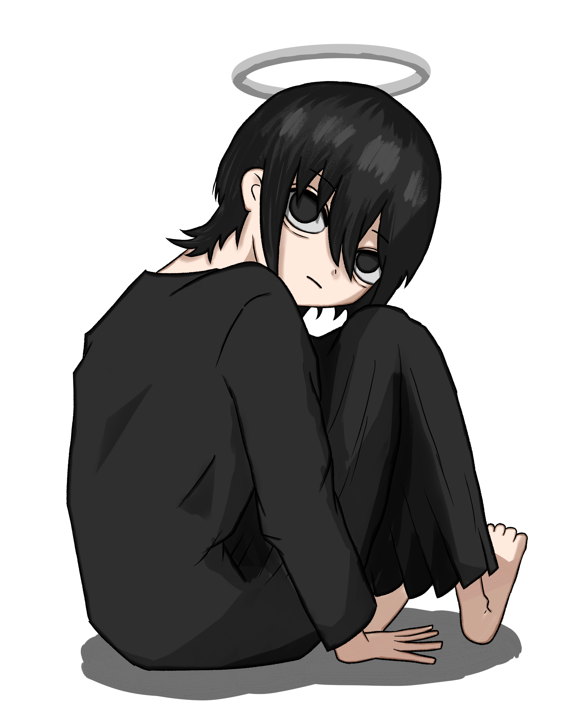

こんにちは、ザクザク食感です。
今年に入ってから怒涛の更新でやばい
コミティアで買ったいろんな作品を読んで、僕は無意識でインプットを避けていたのかもしれないと思った。
この機会で知った方の作品やたまたま見つけた作品をいろいろ読んで、かなり食らった。
人と比較されるのが嫌いだ。同期に比べて年収が～とか人生設計が～みたいな話は誰しも嫌だと思うし、もちろん僕も嫌いだ。
でも人と比較される機会は多かった。幼少期から人よりは勉強をして、なるべく良い成績、なるべく好かれる人柄であればあるほど親から褒められた。
別にそれが悪かったとは思わない。良い部分は褒めるのが当然だと思うし何も間違っていないと思う。僕がそれにしか縋れずに、自分で自分を認めることができない性格だったのがたまたま良くないだけだったと思う。
中学生になって親の手が離れてから、僕の成績は目に見えて落ちていった。頑張っても見てもらえなくなった。
それでも親は僕のことは優秀だと思っているから、親の前ではそう振る舞っていた。結果が伴わないことを知られても叱られなくなったというか、気づかないふりをされたのが苦しかった。
あんなに学歴がすべてみたいなことを言われて幼稚園の頃から受験勉強をしていたのに、成績が落ちてからは「結局良い仕事に就ければいい」と言われたのが苦しかった。それも優しさだったのだと思うけど、期待されなくなった気がして悲しかった。
それからダラダラ生きて、勉強をしたり努力ができない、人に嫌われることだけを極度に恐れている人間になった。
何も頑張らないのに自分と他人の比較だけはして勝手に凹むことが増えた。自分が人より良い結果を残したとしても、それはそれで気まずくて、嫌な印象を抱かれて嫌われる方が怖くて心の底から喜べなかった。
だから人と比較されるのが嫌いだ。
その延長で作品のインプットを無意識に避けるようになったような気がする。
変に絵や動画に手を出したせいで自分の現状を知ってしまって、自分より年下だけど絵が上手いとか、曲が作れるとか、顔が良いとか、歌が上手いとか、そういう人を見かけては「それに比べて僕は……」と思う機会が増えていった。そうなりたくなくて純粋に作品を受け取れなくなった。
みんなにもそういう経験あるんじゃない！？そう信じています
でも作品に優劣なんかないとも思う。制作にかかった時間やクオリティの違いこそあれど、優劣とかではなく作品ごとの良さが個々にあるだけで、順位なんかつけることはできないと思う。
だから僕の作品にもあるかもしれない良さを信じて本をつくって、人に見られる場所でそれを販売した。すごく成長したなと自分でも思う。
ただ、今回のコミティアでいろんな人の作品を読んで、自分ではとてもたどり着けないと思うことがたくさんあった。
僕が今書いているような悩んでいることとは比べ物にならないくらい重たい問題を乗り越えた人の話や、生きていて絶対に思いつくことがない構図の絵や内容の漫画を見て、僕の生きている世界は僕の手が届く範囲のものでしかないことを実感した。
「鬱でへばってても仕方ないから頑張るしかない」とか「家族も他人だ」とか「世界は自分に関係なく進む」とか「自分を愛せなきゃ人を愛せない」とか、文字に起こしたらよく言われている言葉になってしまうことに自分で気づけたとき、そのたびに世界がものすごく広くなる感覚を覚えた。そのとき感じたことをそのままブログに残してきた。
僕にとっては衝撃の事実だったことが、もっと俯瞰した目線で見るとなんでもないことだということが、作品という形にしたことでわかりやすくなったような気がした。
僕の個性とか、僕にしかできないことってなんなんだ……？と思った。
僕にとって一世一代だったことは凡庸なものだった。絵も僕が描きたかったものを僕より上手く理想通りに描いている人がたくさんいる。
と、衝動に任せてここまで書いてきたけど、作品を褒めてくれた人がいたじゃん！！！
フォロワーに「自分の言葉で書こうとしているところがいい」って言ってもらえた！！！コミティアで隣になった方に「ありのままを書こうとしているところがいい」って言ってもらえた！！！
絵も「僕が描くジト目の女の子が好き」って言ってもらえた！！！「薬を飲み始めてから絵に広がりが出て視野が広くなったように感じた」って言ってもらえた！！！
僕は一度内省モードになると脳内が自己批判だらけになってぐるぐる思考が止まらなくなるのが良くない。これがあるから勢いに任せて文章が書けている部分もあるから一長一短だけど
この文を書き始めたときは絶望した！（糸色 望）で終わろうと思っていたが、急に立ち直った。
成長なのか躁鬱なのかわからないが、僕の中で変化が起きていることは間違いないと思う。
僕は僕の見える世界で、凡庸でも僕が感じたことを書き留めておこうと思いました。
ついでに絵を描こうと思ってこねくり回していたらめちゃくちゃ時間がたってた なんつってる間に4時っすよ(笑) あ～あ、義務労働の辛いとこね、これ

それでは、さようなら。